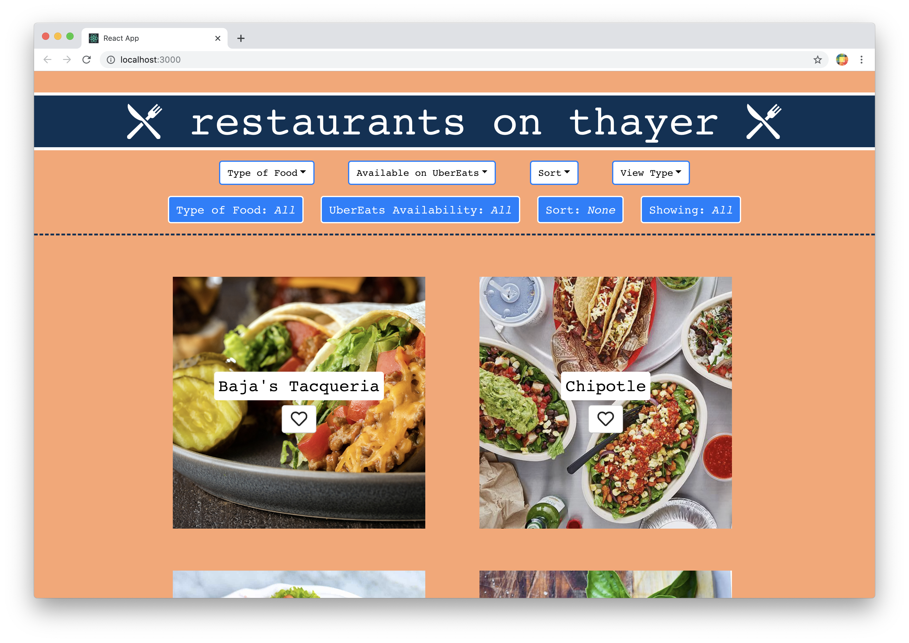

Our development project is a website that allows users to filter and sort the restaurants on Thayer St on Brown's campus! The user can filter the restaurants by type of food served, whether that restaurant's food can be purchased on the UberEats app, and the user can sort the restaurants alphabetically and by what time the restaurants close (earliest to latest). Finally, the users are able to favorite restaurants, and then view a list of all of the restaurants that the user has favorited. This favorited list can also be sorted and filtered.
The high-level goal of our app is to allow Brown University students and Providence residents to view a comprehensive list of all restaurants on Thayer St to see all of their dining options. It allows users to filter and sort the restaurants to better select which restaurant they want to go to.
View deployed website here: https://blooming-citadel-05258.herokuapp.com
Our App is design to have a both easy-to-use and interactive interface. We chose to use strong contrasts in labels, in order to make text as easy to read as possible. Similarly, we chose commonly used icons like the outlined heart and the filled in heart to symbolize and represent whether or not a restaurant has been favorited. We also organized our website so that the dropdown menus appear "clickable", and so that the user easily knows what they have selected through the updating labels located below the dropdowns. We also aimed to have a sleek and clean design, where users could easily see what type of food they were looking at based not only on filters but also on the component's associated photo. This helps ease both the readability and the usability of the website, and better clarify to the user what types of food they should expect from certain restaurants.
We have our main App class which takes in a list of restaurants, which each contain a variety of descriptors such as type of food served, availability on UberEats, closing time, and more. This info was then passed in to our FilteredList class, which dealt with sorting and filtering functionalities. The FilteredList does the filtering and sorting on a List (List.jsx), which is made up of ListItems (ListItem.jsx). The List component tracks whether or not items in the list have been favorited, so that it returns the correct list to FilteredList. In order to determine whether or not a ListItem has been favorited, ListItem contains the functionality to store its current state (isFavorited = Yes/No). In order to ensure that the labels which tell the user what filters they have applied is up-to-date, we created a SelectedLabel class which takes in a prop representing whichever state it is handling (e.g. Type of Food). This way, within our FilteredList we could create new instances of SelectedLabel which were passed the current states of our filters/sorts.